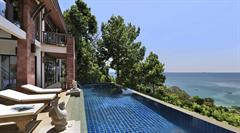
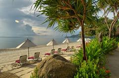
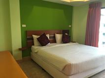
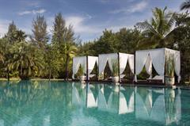
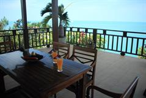
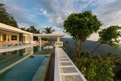
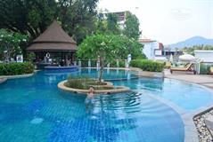

Головна
Тури
Послуги
Про нас
Контакти

Pimalai Resort & Spa
У розкішному та вишуканому курортному спа-готелі Pimalai до послуг гостей ексклюзивні, просторі та тихі номери з персональним обслуговуванням. З вікон відкривається вид на блакитні води Андаманського моря. До послуг гостей безкоштовний трансфер від аеропорту Крабі.
Ціна: $1000

Poppies Samui
Курорт Anavana Beach пропонує тропічний бутик-відпочинок уздовж південного пляжу Чавенг на острові Самуї. З вікон відкривається вид на Сіамську затоку. До послуг гостей відкритий басейн і котеджі в тайському стилі з безкоштовним Wi-Fi.
Ціна: $1000

V STYLE BOUTIQUE HOTEL
Бутік-готель V Style розташований всього за кілька хвилин їзди від пляжу Паттайї та торгового комплексу Central Festival Pattaya. Остання реновація у 2011 році.
Ціна: $1000

SAROJIN
Готель The Sarojin розташований серед розкішного тропічного саду на курорті Кхаолак. З території є прямий доступ до пляжу. Гості гідно оцінять відпочинок у готелі, оточеному національними парками та тропічними лісами, всього за 1 годину їзди на автомобілі від міста Пхукет.
Ціна: $1000

BAAN LOM TALAY
Baan Lom Talay - це вілла в місті Чонгмон-Біч. Тут є відкритий басейн, сад і тераса, а також безкоштовний Wi-Fi. З вікон відкривається краєвид на море. В околицях гості вілли можуть зайнятися пішими прогулянками, сноркелінгом, велосипедними прогулянками та іншими видами активного відпочинку. Серед зручностей - безкоштовне приватне паркування.
Ціна: $1000

LIME SAMUI
Екологічно розроблена вілла Lime Samui 10: Perfect for Families and Events розташована на острові Самуї, за 12 км від Рибацького села.
Ціна: $1000

WHITE PEACH HOTEL
White Peach Hotel підійде мандрівникам, які хочуть краще вивчити місто. White Peach Hotel має усі зручності для комфортного перебування гостей Пхукет у справах або для огляду визначних пам'яток.
Ціна: $1000